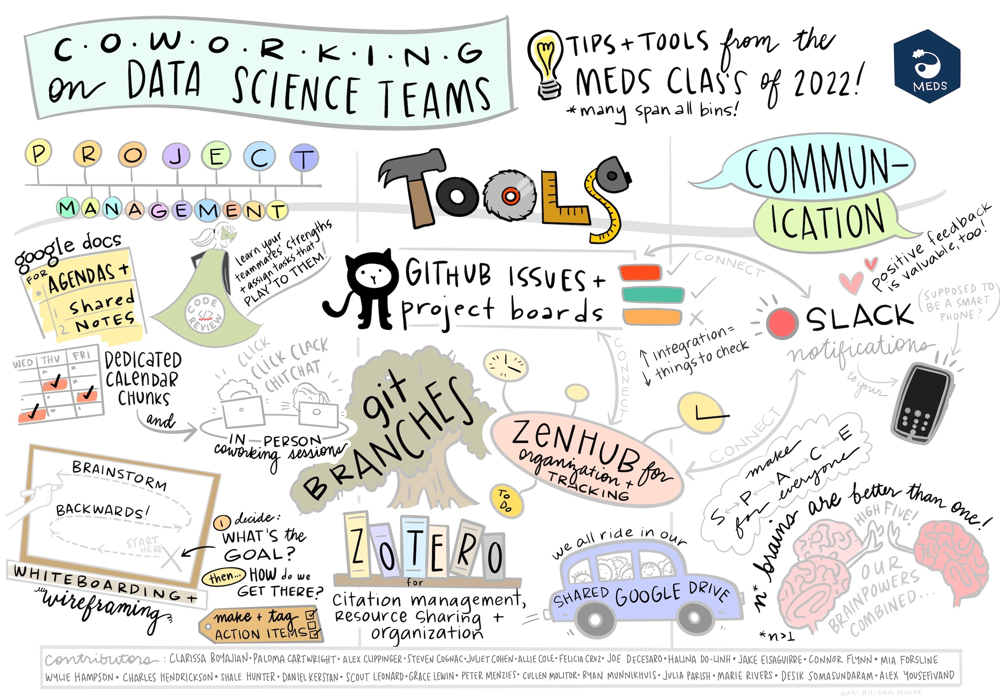

Seaside Chats, etc.
We work together with varied technology and facilitations to provide structure; this is (some of?) the ways we work together.

Seaside Chats
We build shared skillsets in part through Seaside Chats. Seaside Chats are regular meetings where we skillshare and learn together. This will likely be the avenue for onboarding. That will be a place where you can get familiar with any of the tooling and practices that we use. And, you can teach the rest of the team what you know so that we can all work better together. These often have an agenda in advance.
Co-working
We also have co-working sessions where we work at the same time together. Sometimes, this means quiet work with check-ins to break up focused work and get feedback, and sometimes this involves screensharing to problem solve. These most often have no agenda.
Hackathons
We have hackathons to tackle specific tasks together. We use this word to mean working on something together in real time that benefits the project or team. These are often a good way to get early momentum on a project or to re-invigorate an existing project. We kick-started this guide during a 2-person hackathon! We made the github repo, quarto site architecture (section folders, chapter pages, and markdown headers) to outline the guide and built and iterated as we went.
Community Calls
We host ~4 Community Calls per year where we discuss and explore topics relevant to Openscapes. See past and upcoming events that Openscapes has either hosted or joined.
Community Calls are an hour long and generally follow this structure:
- begin 5 mins prior: rotating welcome slides and pump-up music selected by the guest
- 5 mins: welcome, code of conduct, plan for the call, introduce guest
- 25 mins: prepared conversation with guest
- 10 mins: moderated questions/discussion from the chat
- 10 mins: open discussion
- finish 5 mins before a full hour
Cohort Calls
Cohort Calls are the core of the Champions Program and the NASA Openscapes Framework. They are described more in the Champions Lesson Series. They are a big part of how we work as we work with research and mentors groups.
One note: we avoid having folks “shadow”on Cohort Calls, since we are building trust and so avoid have folks “drop in”. Instead, we can plan in advance to have them assist and introduce themselves if they are joining a Cohort Calls and learning by doing.
Resources
- GalaxyKate’s 4-Channel participation model - supporting remote learners